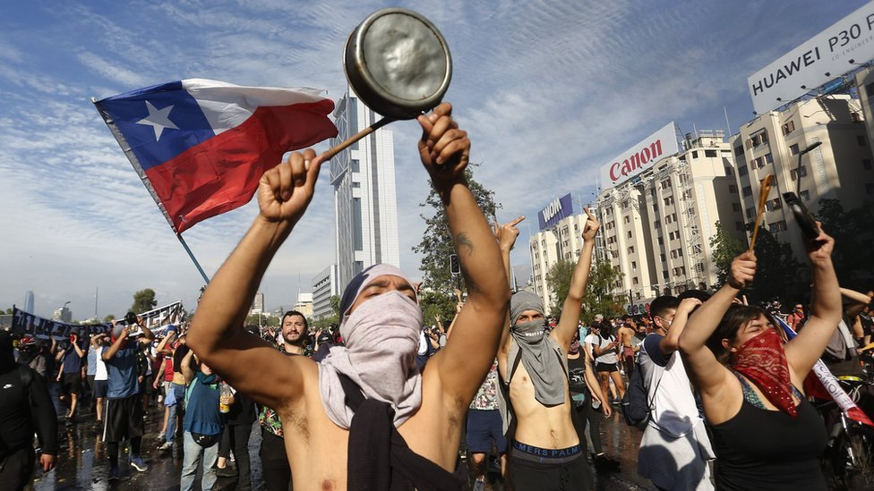
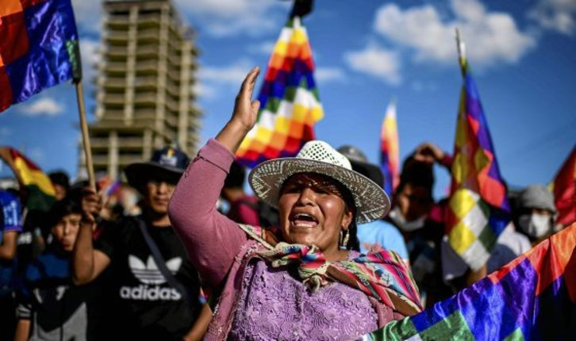
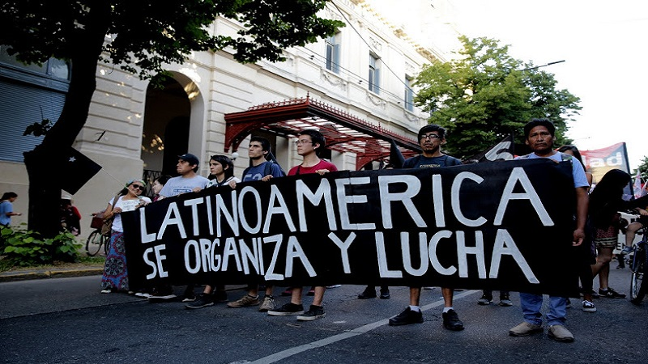
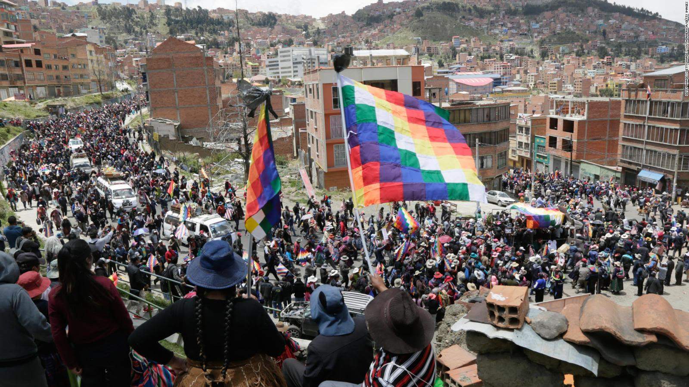
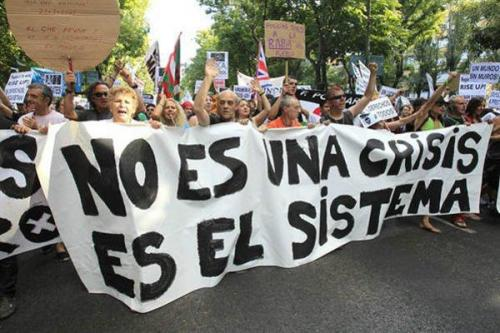
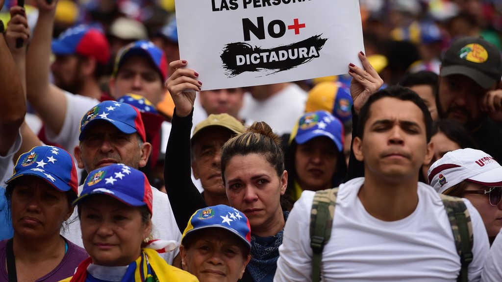
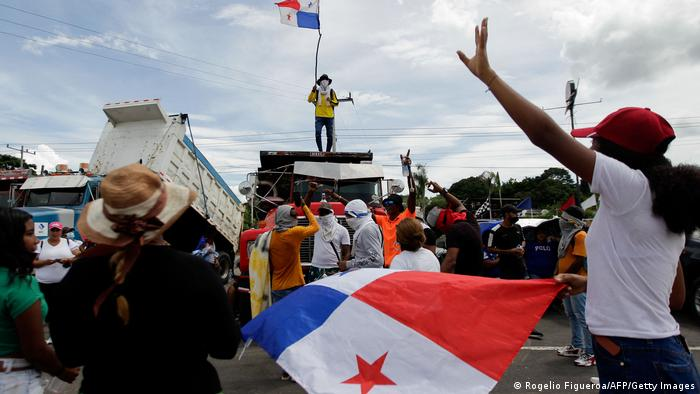

Las diferentes problemáticas de los paises de latinoamérica









Pobreza infantil
El 66,1% de los menores de 14 años en Argentina viven en situación de pobreza.
Leer másSalud mental
Uruguay tiene una de las tasas de suicidio más altas de América Latina y una falta de recursos para la atención en salud mental.
Leer másDesforestación del Amazonas
La deforestación en la Amazonia brasileña es un problema persistente y alarmante, con una pérdida de más del 18% de su selva tropical en los últimos 40 años.
Leer másDesigualdad de acceso a servicios básicos
Diferentes áreas enfrentan altos niveles de pobreza y una falta de acceso a servicios básicos, educación, tecnología e información, así como en la discriminación y la falta de oportunidades económicas.
Leer más
Trabajo infantil
Tiene una de las tasas más altas de trabajo infantil en Sudamérica, sobre todo en sectores agrícolas y mineros
Leer másAlto costo de la educación superior
La educación universitaria es una de las más caras de América Latina, lo que obliga a muchos jóvenes a endeudarse por años.
Leer másDesigualdad entre la capital y el interior del país
Lima concentra la mayoría de los recursos, servicios y oportunidades. Las zonas rurales de la sierra y la selva están marginadas, con acceso limitado a salud, educación e infraestructura.
Leer másInseguridad y violencia del narcotráfico
Entre 2021 y 2022, la tasa de homicidios creció un 94,7 %, especialmente en las provincias costeras. El conflicto entre bandas criminales por controlar rutas de tráfico.
Leer másAsesinato de líderes sociales y defensores del ambiente
El país encabeza la lista mundial de asesinatos de líderes comunitarios, especialmente quienes defienden la tierra o se oponen a proyectos extractivos.
Leer másMigración masiva
Más de 7 millones de venezolanos han huido del país debido a la falta de oportunidades, inseguridad y crisis humanitaria, creando una de las mayores crisis migratorias en la región.
Leer másDesigualdad social pese al auge petrolero
Aunque han descubierto grandes reservas de petróleo y ha crecido económicamente, la pobreza y la desigualdad siguen afectando.El crecimiento no se ha traducido en mejoras en salud, educación o servicios públicos.
Leer másCrisis económica y deuda externa
El pais está atravesando una fuerte crisis económica: devaluación de su moneda, inflación alta y endeudamiento.
Leer másViolencia vinculada al narcotráfico
El narcotráfico ha dejado miles de muertos y desaparecidos. Cárteles criminales se disputan el control de territorios, y su influencia se extiende a instituciones públicas, generando una crisis de seguridad que afecta a todo el país.
Leer másDesempleo y alto costo de vida
El porcentaje de desocupación registró un crecimiento de 7.4 en 2023 a 9.5 en 2024. Además, el aumento de los precios, especialmente en la canasta básica, ha generado una carga económica considerable para las familias.
Leer másAumento de la violencia y crimen organizado
El país ha experimentado un incremento en la violencia, alcanzando una tasa histórica de homicidios de 17,2 por cada 100.000 habitantes. Esto se atribuye a la expansión del crimen organizado y el narcotráfico.
Leer másViolaciones de derechos humanos
Hay un amumento de los casos de detenciones arbitrarias, intimidación de opositores, malos tratos bajo custodia y ataques contra Pueblos Indígenas
Leer másViolencia de género
El país reporta la tasa más alta de feminicidio en América Latina. El 95 % de los casos de mujeres asesinadas sigue impune.
Leer másEconomía
El país enfrenta una economía débil en 2025, con un crecimiento proyectado del 2.2%, el más bajo de Centroamérica. Esto se debe a la baja inversión, el alto endeudamiento y un contexto externo desfavorable.
Leer másPobreza y desnutrición infantil
Más del 50% de la población vive en pobreza y miles de niños sufren desnutrición crónica, especialmente en comunidades indígenas. Esta crisis alimentaria refleja profundas desigualdades sociales y falta de acceso a servicios básicos.
Leer másCrisis económica y humanitaria
La escasez de productos básicos, los apagones y la falta de oportunidades han deteriorado gravemente la calidad de vida, empujando a miles de cubanos a emigrar.
Leer másCrisis humanitaria
Enfrenta una grave crisis humanitaria con millones de personas sin acceso a alimentos, salud ni servicios básicos, en medio de la violencia y el colapso del Estado.
Leer másViolencia de género y embarazo adolescente
El país registra una de las tasas más altas de embarazo adolescente en América Latina, y la violencia de género sigue siendo una preocupación significativa.
Leer másCrisis energética
El pais vive una crisis energética prolongada, con apagones frecuentes y un sistema eléctrico inestable, agravado por una deuda millonaria y falta de soluciones sostenibles.
Leer másVulnerabilidad climática y desastres naturales
Es vulnerable a fenómenos climáticos extremos como huracanes y sequías. El huracán Beryl causó daños estimados en alrededor de $67 millones, afectando la agricultura, los servicios públicos y el turismo.
Leer más